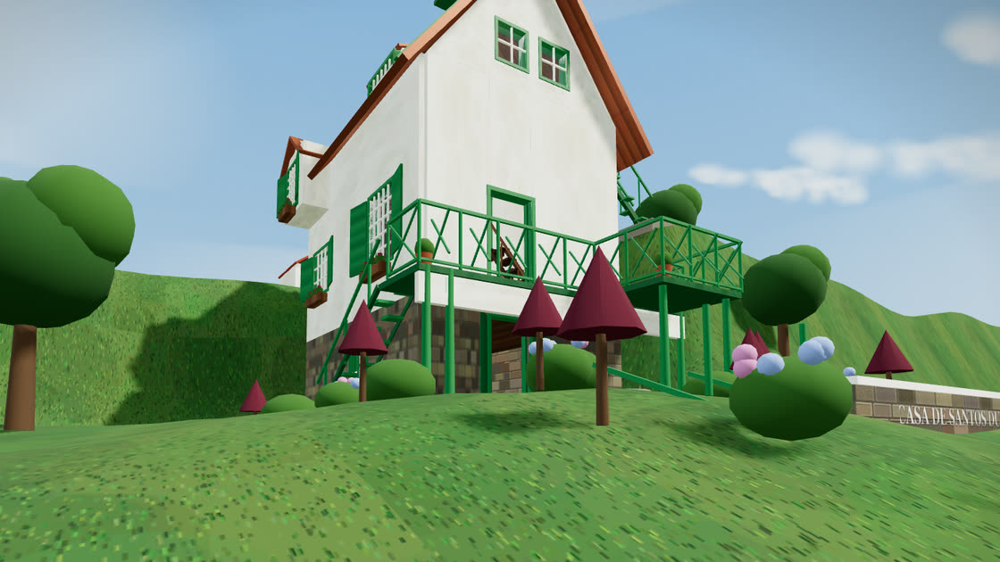
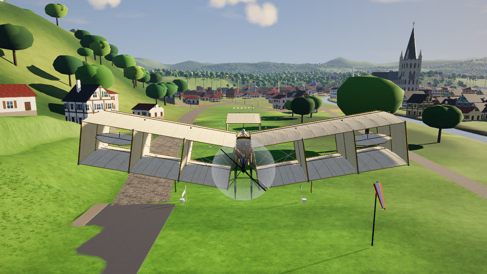

UMA AVENTURA ENTRE A CASA E O CÉU
Explore A Encantada, a casa de Santos Dumont em Petrópolis, e pilote o 14-bis. Escolha a versão:

Versão 1.0Original · histórico
A Encantada
A primeira versão: a casa reconstruída nas medidas das plantas oficiais, com o 14-bis esperando no Campo de Bagatelle.
- Casa navegável: portas, venezianas e lareira
- Escada do Vencedor, que só se sobe com o pé direito
- Primeiro simulador do 14-bis

Nova · Versão 2Atual
14 Bis do Dumont
A serra de Petrópolis inteira para voar: cerca de 5 × 5 km com a cidade, os marcos históricos e a Mata Atlântica.
- 14-bis com física real e 9 câmeras
- Catedral, Museu Imperial, Palácio de Cristal, trem da serra e o dirigível Nº 6
- Santos Dumont em 3ª pessoa, céu dinâmico, dia e noite